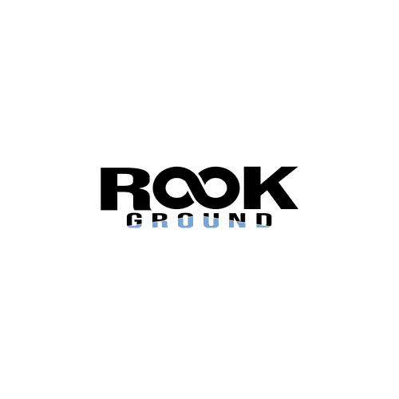
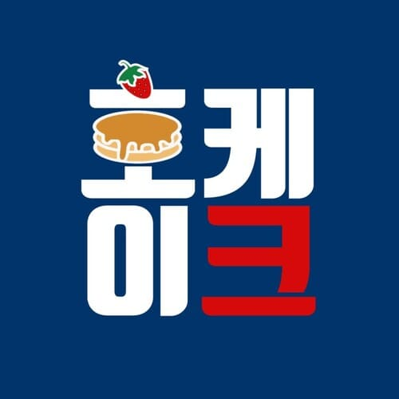
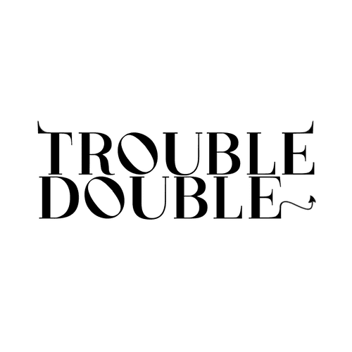
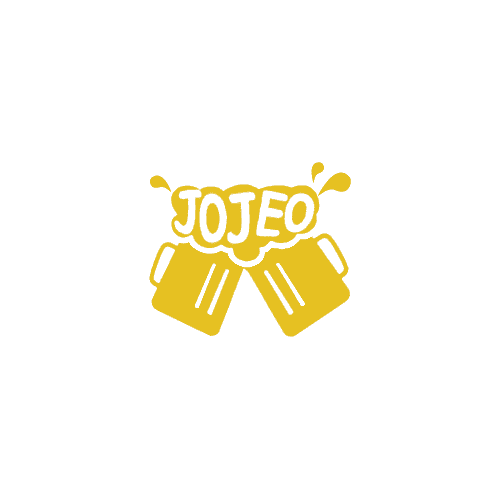

힙합 동아리 RookGround
-무한대 심볼로 무한한 가능성을 형상화
-초록색 세모로 루키들의 그라운드를 형상화
-초록색 세모로 루키들의 그라운드를 형상화

호케이크
-핫케이크를 형상화

해킹 동아리 Decompiler
-알파벳 D와 C, 그리고 자물쇠를 형상화
-초록색은 신뢰를 나타내는 색
-초록색은 신뢰를 나타내는 색

코딩봉사 동아리 CO:Ders
-C와 D, 그리고 코딩하는 사람 2명이 마우스를 잡고 앉아있는
모습을 형상화
-수업에 주로 사용되는 프로그램인 스크래치의 주된 색을 이용해 주된 고객층인 아이들처럼 통통튀는 느낌으로 디자인
-수업에 주로 사용되는 프로그램인 스크래치의 주된 색을 이용해 주된 고객층인 아이들처럼 통통튀는 느낌으로 디자인

음악 동아리 lowkeylofi
-음표와 LP레코드를 형상화
-무드에 맞는 소문자 사용
-무드에 맞는 소문자 사용
뮤직유튜브 크리에이터 KIM NOW
-오선지와 악보, 그리고 온에어 네온사인을 형상화

패션 브랜드 Trouble Double
-악동같은 말썽꾸러기 스트릿 브랜드로, 악마의 뿔과
꼬리를 통해 브랜드 이미지를 강조

크래프트 브루어리 Jojeo
-맥주잔 두 잔이 부딪히는 거품에 브랜드 이름 형상화